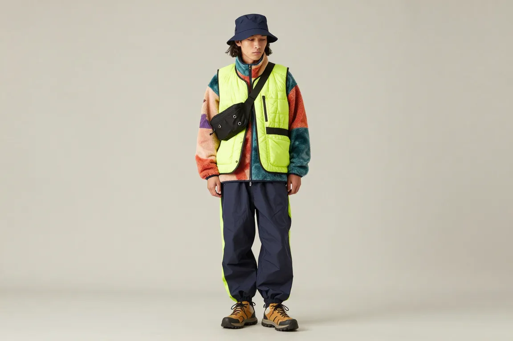

Gorpcore
fashion · 2017–now · also: Trail wear as fashion, Outdoor-gear chic, Ugly outdoor wear
Trail and camp gear worn in the city as fashion. A fleece, a bright shell, a down vest and ripstop trousers, with no wish to look polished.

Core thesis
The best dress is the kind you would take on a hike: it looks plain, it is tough, and its colours come from the trail.
Design principles
- Layer a fleece, a vest and a shell in three different colours.
- Choose a trail trouser of ripstop nylon with a zip-off leg or a drawcord hem.
- Wear a trail shoe or a sandal with a thick sole of 3 to 4 cm.
- Add a cap or a bucket hat in the same cloth as the shell.
- Keep gear details on show: toggles, drawcords and a bold zip.
- Use bright blocks of colour in primary tones.
- Wear the gear worn, with a mark of use.
Anti-patterns
- A pressed, polished city suit
- A black, stealth surface with no colour
- A new-looking item with no gear detail
- Fine, thin cloth that tears on a trail
- A logo as the whole design
Palette
Lineage
- Echoes
- Health Goth, Normcore, Street photography
- Evolved from
- Technical shell alpinism
- Hybridises with
- Streetwear, Techwear
- Rebelled against
- Minimalist fashion
Use it
SKILL.md · tokens.css · source JSON · open in the demo